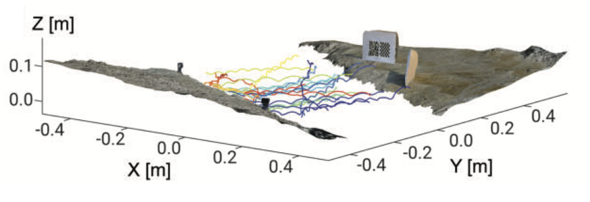

Squid-Inspired Nozzles for Enhanced Efficiency and Thrust
Soft robotic propulsors are constrained by onboard power and the cost of active sensing and flow control. In this work, we demonstrate a purely passive mechanism — requiring no added control hardware — that amplifies pulsed jet impulse by more than 300% relative to a rigid nozzle, confirmed independently by PIV vorticity fields, load-cell force measurements, and two-way 3D fluid–structure interaction simulations. We term this within-pulse elastic store-release mechanism superpropulsion.

Squid use vortex-ring pulses across nearly four orders of magnitude in body size, from pygmy bobtail to colossal squid approaching 10 m. We show the squid funnel (siphon) dilates and recoils out of phase with mantle contraction — a behavior that persists after severing active neural control, indicating a substantial passive mechanical contribution. Histology reveals a collagen-rich outer sheath threefold thicker in the funnel than in the mantle, consistent with elastic load bearing. Impulse amplification peaks when nozzle-wall wave-transit time matches jet-acceleration time (τ/T = 0.2–0.4), and in vivo squid timing falls in the same window.

Tuned nozzles increase peak aerial jet height by 110%, enhance inking-inspired plume dispersion by 40%, and boost jet-propelled boat speed by 41% while reducing cost of transport by 28%, at similar electrical power draw. These gains persist after 40× miniaturization and across more than 135 nozzle and application trials — possible only through the convergence of comparative biomechanics, histology, fluid mechanics, mathematical theory, soft materials, and robotics.
Beyond passive compliance, nozzle contour geometry critically shapes both inlet energy and outlet impulse. As a continuation, we employ multi-objective Bayesian optimization (MOBO) with Gaussian Process surrogate models to efficiently navigate the nozzle design space — parametrized by control-point splines — evaluated through high-fidelity OpenFOAM FSI simulations. This sample-efficient framework iteratively identifies Pareto-optimal geometries that maximize outlet impulse while minimizing inlet energy, without exhaustive brute-force simulation. The approach is currently being extended from pulsed jet systems to rotary propellers, targeting enhanced thrust efficiency for underwater vehicles.
Keywords: bioinspired propulsion, FSI, elastic waves, deep learning, Bayesian optimization, DARPA, soft robotics, PIV, dynamometry
Publications: arXiv:2605.03239 arXiv:2605.17319 J. Fluid Mech. 2024 J. Fluid Mech. 2022
High-Weber Interfacial Locomotion & Robotic Development
Mudskippers are among the few fish that can move across water surfaces, using a distinctive fin-assisted "galumphing" gait that exploits surface tension, inertia, and fin thrust in concert. We investigate the interfacial hydrodynamics and 3D kinematics of mudskipper water-hopping through high-speed laboratory experiments and biological fieldwork conducted in Borneo.
A custom stereo-camera 3D tracking system enables non-invasive pose estimation of freely-moving animals in natural mangrove habitats — the first such system deployed for mudskippers in the wild. Physical and robotic models are built to validate the discovered locomotion principles and bridge biological observation to engineering implementation.



In-depth hydrodynamic analysis reveals that mudskipper water-hopping operates in the high Weber–Bond (We-Bo) regime, where inertial forces dominate over surface tension and gravity. A key finding is the timescale matching between tail-fin thrust and pectoral-fin cavity collapse: the duration of tail-fin propulsion coincides with the collapse time of the air cavity formed by the pectoral fins upon water entry, enabling efficient coupling between the two propulsive elements. Flap-displacement experiments with a physical mudskipper model directly demonstrate that cavity collapse generates measurable thrust — revealing a passive thrust mechanism that operates in concert with active fin actuation.

Related work covers the Manu jump — how humans create large water-entry splashes through body posture control and timing — and Epineuston vortex recapture in tiny water-walking insects, where leg-generated vortices are recaptured by subsequent strokes to enhance thrust efficiency.
Guided by these biological principles, we are developing a miniaturized amphibious robotic platform capable of seamlessly switching between underwater swimming and surface hopping — replicating the mudskipper's multimodal locomotion strategy. The 60 mm prototype integrates dual propeller motors for aquatic propulsion and a fin motor for impulse-driven hopping, all coordinated by a custom 30 mm PCB embedding dual motor drivers, a gyroscope, and Bluetooth. This platform serves as a physical testbed for validating hydrodynamic principles uncovered through biological observation and physical-model experiments.

Keywords: bioinspired robotics, interfacial dynamics, 3D tracking, high-speed imaging, surface tension, water entry, fieldwork (Borneo)
Publications: Integr. Comp. Biol. 2025 J. R. Soc. Interface 2025 bioRxiv (water skaters)
Interface & Multiphase Flow Diagnostics


We developed DeepBubbleVelocimetry — the first CNN-based optical flow algorithm purpose-built for bubble velocimetry — enabling non-invasive velocity diagnostics at bubble void fractions up to 58%, far beyond the ~11% limit of conventional particle tracking velocimetry (PTV). The algorithm fine-tunes the PWC-Net optical flow network on synthetically generated bubble image datasets, achieving superior accuracy and speed across all bubble density regimes.
Liquid atomization studies of water columns broken by annular dual-nozzle gas jets revealed Rayleigh–Taylor instability as the primary atomization mechanism. Flow regime boundaries were theoretically derived using control volume analysis and validated experimentally. The resulting droplet diameter predictions match Rayleigh–Taylor cell wavelengths.
Industrial collaborations addressed spray coating film formation for marine paint applications (Daewoo Shipbuilding), and the effects of superhydrophobic surface coatings on bluff-body wakes (Samsung SAIT), where the optimal SHPo condition was found to reduce recirculation length by augmenting near-separation flow fluctuations.
Keywords: bubble velocimetry, CNN optical flow, liquid atomization, Rayleigh–Taylor instability, spray coating, superhydrophobicity, PIV
Publications: Sci. Rep. 2022 J. Fluid Mech. 2022 (atomization) GitHub: DeepBubbleVelocimetry
Undergraduate theses supervised — Junwon Seo (SNU, 2020): flow visualization of air jets from bubble rupture · Suhwan Shim (SNU, 2017): superhydrophobic surface effects on sphere wake
FSI, Multi-body Flows & Medical Devices


A flexible nozzle modifies the vortical structure of a starting jet and amplifies thrust. By combining hydrodynamic conservation equations with linearized shell theory, we derived and validated the optimal nozzle stiffness for maximum impulse — establishing the theoretical foundation that underpins the entire squid-inspired propulsion program. This work introduced the concept of elastic wave-mediated vortex formation number control in compliant nozzles.
Multi-body wake interactions in in-line sphere arrays (Re = 1000) were systematically characterized using 2D PIV and dye visualization. Downstream spheres were found to weaken upstream wakes, reducing form drag through pressure reconstruction analysis.
Electroconvective circulating flows in asymmetric multiscale porous membranes were identified and characterized. Asymmetric coulombic force distribution among micropores drives circulating flows that enhance ion transport and lower the effective membrane resistance.
In collaboration with Yonsei Severance Hospital, we developed medical devices for urinary surgery — including a Foley catheter removal assessment apparatus and hydronephrosis-induction systems for ureteral access. These resulted in three granted patents and one PCT patent. Product demo video →
Keywords: FSI, starting jet, flexible nozzle, sphere array, multi-body wake, electroconvective flow, ion-selective membrane, medical device, patents, PIV
Publications: J. Fluid Mech. 2022 (FSI) J. Membr. Sci. 2021 Phys. Fluids 2018
Undergraduate thesis supervised — Taechang Kim (SNU, 2016): analysis of optimal rowing boat shape using flow visualization